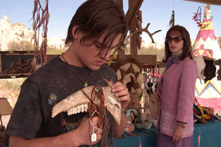

| Film - Konkurrence | Februar 2006 |
Konkurrencen er slut. De 10 billetter til filmen TRANSAMERICA
som går i Nordisk Film's Biografer er blevet udloddet. Konkurrencens spørgsmål var: Hvornår er der Queer Festival i København 2006? Svar: Queer festivalen er: 3. - 9. Juli - 2006 Læs mere om festivallen her: www.queerfestival.org |
|
| Lidt om TRANSAMERICA | . |
 |
|
| Bree mangler kun et par enkelte operationer før hun
er en fuldbyrdet kvinde. Alt imens denne transformation foregår, får
hun pludselig et opkald fra en ung fyr, Toby, som hun tilsyneladende er
far til. Herfra følger vi Bree og Toby's historie og er vidne til
en bevægende rejse, hvor de begge udfordres og langsomt ændrer
syn på identitet, liv og kærlighed. Felicity Huffman fra Desperate Housewives spiller overbevisende i den krævende rolle som manden der bliver kvinde og er fortjent nomineret til en Golden Globe 2006. Hun gik så meget op i rollen som mand i sin nye film »Transamerica«, at hun under optagelserne altid var iført en penisattrap, der i øvrigt fik kælenavnet Andy. |
|
| ORIGINALTITEL: | Transamerica |
| . | USA 2005. 35 mm . 100 min. |
| . | Engelsk med undertekster |
| INSTRUKTØR/DIRECTOR: | Duncan Tucker |
| MEDVIRKENDE/CAST: | Felicity Huffman og Kevin Zegers |